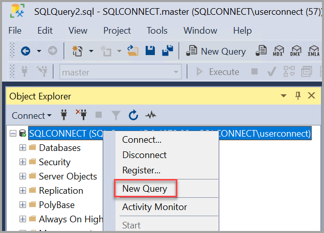
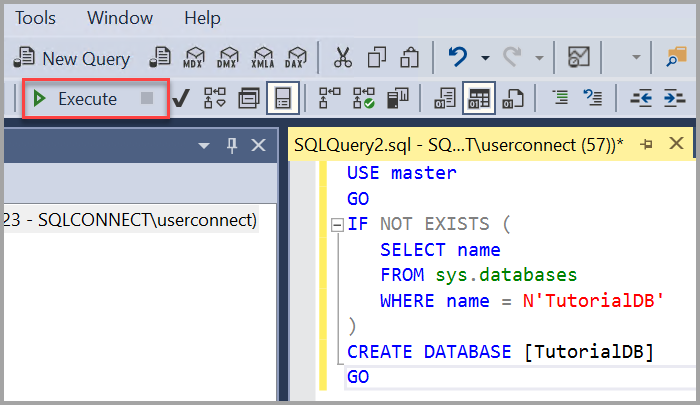
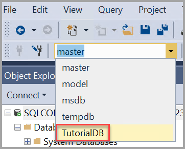
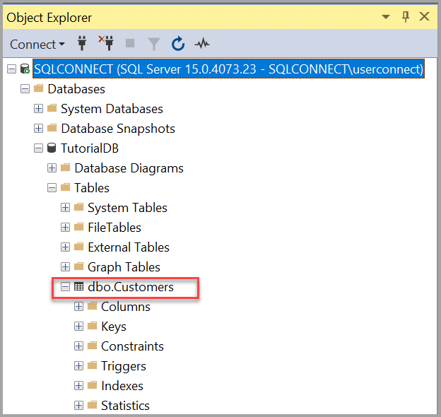
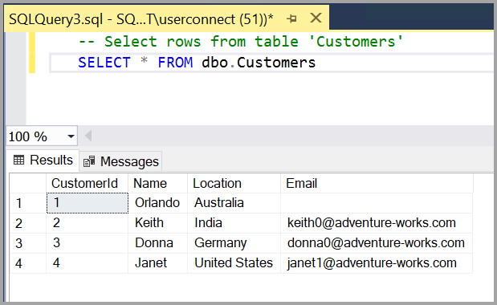

第八週｜SSMS 截圖操作指南
每次只完成一個動作。核對「看到這個才往下」，再繼續下一步。
截圖取自 Microsoft 官方文件，包含不同版本的 SSMS 實際介面，並非本課電腦的實測畫面。圖中的 TutorialDB／Customers 不必照抄；本課一律使用 CampusActivityLab08／dbo.Registrations。英／中文介面可依括號名稱對照。
開始前
先完成第二週的 Windows、SQL Server Express 與 SSMS 安裝。備妥自己的執行個體名稱（常見為 .\SQLEXPRESS），並下載學生包、解壓縮。只有 SSMS，沒有執行中的 SQL Server 服務，會無法連線。
本課以「新增查詢 → 貼上 SQL → 執行 → 核對結果」走完流程。60 分鐘先完成下方九個小步驟；多出的 30 分鐘再做原本的篩選與排序練習。
1. 連到自己的 SQL Server

在哪裡：SSMS 的 Connect／連線視窗
- 從 Windows 開始功能表啟動 SQL Server Management Studio。
- 若沒有連線視窗：View → Object Explorer，再按 Connect → Database Engine。
- Server Name／伺服器名稱填第二週記下的名稱，例如
.\SQLEXPRESS。點號代表本機；請勿照抄圖片中的 <server>。 - Authentication／驗證選 Windows Authentication。Windows 使用者名稱通常自動帶入，不另外填 SQL 密碼。
- 按 Connect／連線。
看到這個才往下：左側出現自己的伺服器，可展開 Databases／資料庫。
連不上：先查 SQL Server（SQLEXPRESS）服務有沒有啟動、執行個體名稱是否正確。本機教學遇到憑證不受信任時，確認目的地後可勾 Trust Server Certificate；正式環境應使用可信任憑證。
2. 開啟空白查詢分頁

在哪裡：左側 Object Explorer／物件總管
- 在自己的伺服器名稱上按滑鼠右鍵。
- 選 New Query／新增查詢。
- 把游標點進右側空白編輯區，接下來的 SQL 貼在這裡。
看到這個才往下：右側出現 SQLQuery… 分頁，裡面可以輸入文字。
新分頁起初顯示 master 沒關係；下一步只建立新資料庫。之後建表前一定切到自己的練習資料庫。
3. 建立本課練習資料庫

在哪裡：剛剛開啟的空白查詢編輯區
USE master; GO CREATE DATABASE CampusActivityLab08; GO
- 按「複製 SQL」，貼到空白編輯區。若無法複製，就手動選取程式碼。
- 按上方 Execute／執行，或鍵盤 F5，一次即可。GO 是 SSMS 用來分隔批次的標記，照範例放在獨立一行。
- 回左側右鍵 Databases → Refresh，再展開 Databases。
看到這個才往下：左側列出 CampusActivityLab08。
若名稱已存在，不要刪掉重建，直接進下一步。SQL 的「建立資料庫」是 CREATE DATABASE；它還沒有建立報名資料表。
4. 切換並核對目前資料庫

在哪裡：新查詢分頁的左上工具列
- 再按 New Query。展開左上資料庫下拉選單，選 CampusActivityLab08。
- 貼上下方 SQL，按 Execute／F5。
- 在下方 Results／結果 找到 CurrentDatabase。
USE CampusActivityLab08; GO SELECT DB_NAME() AS CurrentDatabase;
看到這個才往下：結果值是 CampusActivityLab08，不是 master。
每個查詢分頁有自己的資料庫目的地。換分頁後都要看一次；不要只看左側選到哪個資料庫。
5. 建立三欄的報名資料表
在哪裡：步驟 4 已確認目的地的查詢分頁
- 點進編輯區，Ctrl+A 選取舊 SQL；貼下方程式碼取代。只是更換指令文字，並非刪資料。
- 確認左上仍是 CampusActivityLab08。
- 按 Execute／F5 一次。Messages／訊息若沒有錯誤，再到下一步核對資料表。
CREATE TABLE dbo.Registrations
(
Id int IDENTITY(1,1) NOT NULL PRIMARY KEY,
DisplayName nvarchar(20) NOT NULL,
Session nvarchar(20) NOT NULL
);Id：由資料庫編號的主鍵；DisplayName：顯示名稱；Session：場次。nvarchar(20) 是文字欄位；NOT NULL 禁止 NULL，但不替代表單驗證。
物件已存在：不要再建、不要刪表，直接到步驟 6。需要備援時可用 01-setup.sql；它會跳過已存在的資料庫與資料表。
6. 展開資料表與欄位

在哪裡：左側物件總管
- 依序展開 Databases → CampusActivityLab08。
- 在 Tables／資料表上按右鍵 → Refresh／重新整理。
- 展開 dbo.Registrations → Columns／資料行。
看到這個才往下：Columns 底下列出 Id、DisplayName、Session。
表現在沒有資料是正常的。「建表」只定義欄位；下一步 INSERT 才加入資料列。圖中 Customers 只是官方範例，不是本課資料表。
7. INSERT：新增第一筆假資料
在哪裡：右鍵 CampusActivityLab08 → New Query
- 新開空白查詢分頁，確認左上是 CampusActivityLab08。
- 貼上下方 INSERT。
N表示 Unicode 文字；姓名與場次各放在單引號內。 - 按 Execute／F5 一次，切到下方 Messages／訊息。
INSERT INTO dbo.Registrations (DisplayName, Session) VALUES (N'小安', N'上午場');
看到這個才往下：類似「影響 1 列」或「1 row affected」的訊息。實際內容仍要用下一步 SELECT 確認。
截圖只用來找 Execute 按鈕，並非本課 INSERT 的執行結果。INSERT 每跑一次就加一列，請勿連按 F5；即使同名小安也會得到不同 Id。
8. SELECT：查出剛剛新增的小安

在哪裡：另一個只有 SELECT 的查詢分頁
- 再右鍵 CampusActivityLab08 → New Query，避免和 INSERT 混在同一個分頁。
- 只貼下方 SELECT，按 Execute／F5。
- 看下方 Results／結果，不是 Messages。
SELECT Id, DisplayName, Session FROM dbo.Registrations;
看到這個才往下：三欄 Id、DisplayName、Session；至少一列是「某個 Id／小安／上午場」。Id 不一定是 1，請記下自己的值。
只有欄名、沒有資料：可能尚未新增，或選錯資料庫。若結果變成文字，按 Ctrl+D 切回 Results to Grid 再查。重跑 SELECT 只讀取，不會新增資料。
9. 關閉查詢後，再找到同一筆資料
- 先記下步驟 8 的 Id、姓名與場次。
- 關閉查詢分頁。如果詢問儲存 .sql 檔，可以儲存自己的指令文字；這和資料庫裡的資料是兩件事。
- 在左側右鍵 CampusActivityLab08 → New Query，確認左上資料庫名稱。
- 只貼 SELECT 查詢再執行；不再執行 INSERT。
SELECT Id, DisplayName, Session FROM dbo.Registrations;
完成：看到剛才記下的同一個 Id、姓名與場次。資料真的留在 SQL Server 裡。
再練一次：把 INSERT 姓名改成「練習同學」，執行一次；查到新增的一筆，關閉分頁再查。同桌指出一列、一欄與主鍵，填 驗收紀錄。
90 分鐘選做
使用 04-optional-filter.sql，先各新增一次小晴／下午場與小宇／上午場。接著只選取 SELECT 段，練習 WHERE 與 ORDER BY。改場次、改 ASC／DESC，先預測再執行。查不到不存在的場次，應是 0 列，不是連線錯誤。
遇到問題，依序核對
| 現象 | 先確認 |
|---|---|
| 連不上伺服器 | SQL Server（SQLEXPRESS）服務是否執行；名稱是否與第二週一致。只安裝 SSMS 不夠。 |
| 不信任憑證 | 只在本機教學，核對伺服器後可勾 Trust server certificate；正式環境使用可信任憑證。 |
| 資料庫或資料表找不到 | SELECT DB_NAME()；左側 Refresh；01-setup.sql 是否成功；檢查 dbo.Registrations 拼字。 |
| 物件已存在 | 已建好就略過 CREATE TABLE，改執行 SELECT；不要刪資料庫解錯。 |
| 出現兩個小安 | 是否執行 INSERT 兩次？各有不同 Id。查詢不會新增。 |
| 沒有建立權限 | 請老師協助在課堂練習執行個體建立練習區，勿改用不明帳密。 |
驗收與記錄
記下目前資料庫、執行的 SQL、預期結果、實際結果；只用假資料。下載驗收表。
回第八週簡報 · 結果互動示意 · EF Core 延伸（另安排課時）
截圖來源與版本：圖片來源清單。官方參考：SSMS 連線與查詢